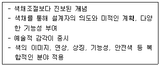
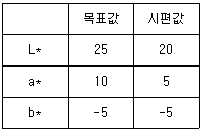
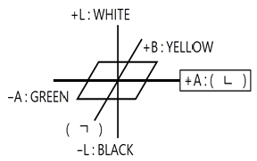
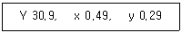
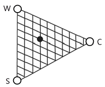

컬러리스트기사 (2022-04-24 기출문제)
1과목: 색채심리 마케팅
1. 색채마케팅 과정을 색채정보화, 색채기획, 판매촉진 전략, 정보망 구축으로 분류할 때 색채기획 단계에 해당하지 않는 것은?
- 소비자의 선호색 및 경향 조사
- 타깃 설정
- 색채 콘셉트 및 이미지 설정
- 색채 포지셔닝 설정
(정답률: 68%)
2. 다음 중 주로 사용되는 색채 설문 조사 방법이 아닌 것은?
- 개별 면접조사
- 전화 조사
- 우편 조사
- 집락(군집)표본 추출법
(정답률: 47%)

3. 색채조사분석 중 의미 미분법(Semantic Differential Method)에 관한 설명으로 틀린 것은?
- 경관이나 제품, 색, 음향, 감촉 등 여러 가지 대상의 인상을 파악하는 방법으로 많이 사용된다.
- 분석으로 만들어지는 이미지 프로필은 각 평가 대상마다 각각의 평정척도에 대한 평가평균값을 구해 그 값을 선으로 연결한 것이다.
- 정량적 색채이미지를 정성적, 심미적으로 측정하는 방법 이다.
- 설문 대상의 수를 증가시킴에 따라 정확도를 더할 수 있으며 그 값은 수치적 데이터로 나오게 된다.
(정답률: 44%)
4. 경영 초점의 변화에 따른 마케팅 개념의 성격으로 틀린 것은?
- 1900년~1920년 : 생산중심, 제품 및 서비스를 분배하는 수준
- 1920년~1940년 : 판매기법, 고객을 판매의 대상으로만 인식
- 1940년~1960년 : 효율추구, 제품의 질보다는 제조과정의 편의추구, 유통비용 감소
- 1960년~1980년 : 사회의식, 환경문제 등 기업문화 창출을 통한 사회와의 융합
(정답률: 54%)
5. 일반적인 색채 선호에서 연령별 선호 경향으로 잘못된 것은?
- 어린이가 좋아하는 색은 빨강과 노랑이다.
- 색채 선호의 연령 차이는 인종, 국가를 초월하여 거의 비슷한 경향을 보인다.
- 연령이 낮을수록 원색 계열과 밝은 톤을 선호한다.
- 성인이 되면서 주로 장파장 색을 선호하게 된다.
(정답률: 60%)
6. 종교와 색채에 대한 설명이 틀린 것은?
- 기독교에서는 그리스도의 흰 옷, 천사의 흰 옷 등을 통해 흰색을 성스러운 이미지로 표현한다.
- 이슬람교에서는 신에게 선택되어 부활할 수 있는 낙원을 상징하는 초록을 매우 신성시한다.
- 힌두교에서는 해가 떠오르는 동쪽은 빨강, 해가 지는 서쪽은 검정으로 여긴다.
- 고대 중국에서는 천상과 지상에서 가장 경이로운 색 중의 하나가 검정이라 하였다.
(정답률: 50%)
7. 색채와 형태의 연구에서 정사각형을 상징하는 색에 대한 설명으로 옳은 것은?
- 두뇌의 신경계, 신진대사의 균형과 불면증 치료에 사용 하는 색이다.
- 당뇨와 습진 치료에 사용하며 염증 완화와 소화계통 질병에 효과적인 색이다.
- 심장기관에 도움을 주며 심신의 안정을 위해 사용하는 색이다.
- 빈혈, 결핵 등의 치료에 효과적인 색이며 혈압을 상승 시 켜준다.
(정답률: 64%)
8. 구매시점에 강력한 자극을 주어 판매에 연결될 수 있도록 하며, 적은 비용으로 최대의 효과를 내는 광고는?
- POP 광고
- 포지션 광고
- 다이렉트광고
- 옥외광고
(정답률: 69%)
9. 색채 치료 중 염증 완화와 소화계에 도움을 주며, 당뇨와 우울증을 개선하는 색과 관련된 형태는?
- 원
- 역삼각형
- 정사각형
- 육각형
(정답률: 48%)
10. 학문을 상징하는 색채는 종종 대학의 졸업식에서 활용되기도 한다. 학문의 분류와 색채의 조합이 올바른 것은?
- 인문학 - 밝은 회색
- 신학 - 노란색
- 법학 - 보라
- 의학 - 파랑
(정답률: 66%)
11. 컴퓨터에 의한 컬러 마케팅의 기능을 효율적으로 전개한 결과, 파악할 수 있는 내용과 관계가 없는 것은?
- 제품의 표준화, 보편화, 일반화
- 기업정책과 고객의 Identity
- 상품 이미지와 인간의 Needs
- 자사와 경쟁사의 제품 차별화를 통한 마케팅
(정답률: 56%)
12. 색채정보를 수집하기 위한 층화 표본 추출에 대한 설명으로 틀린 것은?
- 모집단을 모두 포괄하는 목록이 있어야 한다.
- 조사 분석을 위한 하위 집단을 분류한다.
- 하위 집단별로 비례 표본을 선정한다.
- 조사 결과에 영향을 미치는 변수를 기준으로 하위 모집 단을 구분한다.
(정답률: 47%)
13. 처음 색을 보았을 때보다 시간이 지나면서 그 특성이 약해 지는 현상은?
- 잔상색
- 보색
- 기억색
- 순응색
(정답률: 67%)
14. 소비자 행동 측면에서 살펴볼 때, 국내기업이 라이센스 비용을 지불하면서도 외국기업의 유명 브랜드를 들여오는 가장 큰 이유는?
- 일반적으로 소비자들이 유명하지 않은 상표보다는 유명한 상표에 자신의 충성도를 이전시킬 가능성이 높기 때문
- 해외 브랜드는 소비자 마케팅이 수월하기 때문
- 국내 브랜드에는 라이센스의 다양한 종류가 없기 때문
- 국내 소비자들이 외국 브랜드를 우선 선택하기 때문
(정답률: 77%)
15. 국가나 도시의 특성과 이미지를 부각시키는데 중요한 역할을 하면서 고유의 정체성을 대변하는 색은?
- 국민색
- 전통색
- 국기색
- 지역색
(정답률: 61%)
16. 구매의사 결정에 영향을 미치는 요인 중 소속집단과 가장 관련된 것은?
- 사회적 요인
- 문화적 요인
- 개인적 요인
- 심리적 요인
(정답률: 63%)
17. 제품의 라이프사이클(Life Cycle) 단계에 따라 홍보 전략이 달라져야 성공적인 색채마케팅 결과를 얻을 수 있다. 다음 중 성장기에 합당한 홍보 전략은?
- 제품 알리기와 혁신적인 설득
- 브랜드의 우수성을 알리고 대형시장에 침투
- 제품의 리포지셔닝, 브랜드 차별화
- 저가격을 통한 축소전환
(정답률: 56%)
18. 다음 보기에서 설명하는 개념은?

- 색채계획
- 색채심리
- 색채과학
- 환경색채
(정답률: 62%)
19. 색채 시장조사의 과정에서 소비자의 욕구를 파악하는 방법 으로 가장 적절한 것은?
- 현재 시장에서 사회·문화·기술적 환경의 변화를 종합적으로 파악한다.
- 시나리오 기법으로 예측한다.
- 현재 시장에서 변화의 의미를 자사의 관점에서 파악한다.
- 끊임없는 미래의 추세에 대한 새로운 가능성을 시도한다.
(정답률: 74%)
20. 전통적 마케팅의 개념에서 중요하게 다루어지지 않았던 것은?
- 대량판매
- 이윤추구
- 고객만족
- 판매촉진
(정답률: 64%)
2과목: 색채디자인
21. 디자인에 사용되는 비언어적 기호의 3가지 유형에 속하지 않는 것은?
- 자연적 표현
- 사물적 표현
- 추상적 표현
- 추상적 상징
(정답률: 43%)
22. 시각적 구성에서 통일성을 취하려는 지각심리로 스토리가 끝나기 전에 마음속으로 결정하는 심리용어는?
- 균형
- 완결
- 비례
- 상징
(정답률: 66%)
23. 환경디자인의 경관에 대한 설명 중 틀린 것은?
- 경관은 원경 - 중경 - 근경으로 나누어진다.
- 경관디자인에 있어서 전체보다는 각 부분별 특성을 살리는 것이 중요하다.
- 경관은 시간적, 공간적 연속성으로 파악해야 한다.
- 경관디자인을 통해 지역적 특성을 살릴 수 있다.
(정답률: 75%)
24. 색채계획에 있어 디자이너가 갖추어야 하는 가장 중요한 요소는?
- 색채처리에 대한 감성적 사고
- 기능적 색채처리를 위한 이성적 사고
- 개성적인 색채훈련
- 일관된 색을 재현해낼 수 있는 배색 훈련
(정답률: 54%)
25. 팝아트에 관한 설명 중 옳은 것은?
- 인간의 시지각 원리에 근거한 것이다.
- 1960년대에 뉴욕을 중심으로 전개된 대중예술이다.
- 여성의 주체성을 찾고자 한 운동이다.
- 분해, 풀어헤침 등 파괴를 지칭하는 행위이다.
(정답률: 74%)
26. 디자인의 개념을 설명한 것으로 거리가 먼 것은?
- 디자인은 생활의 예술이다.
- 디자인은 장식과 심미성에만 치중되는 사회적 과정이다.
- 디자인은 커뮤니케이션의 수단이다.
- 디자인은 미지의 세계로부터 새로운 가치를 추구하는 것이다.
(정답률: 76%)
27. 디자인에 관한 전반적인 설명 중 적합하지 않은 것은?
- 인간 생활의 목적에 맞고 실용적이며 미적인 조형을 계획하고 그를 실현하는 과정과 그에 따른 결과이다.
- 라틴어의 designare가 그 어원이며 이는 모든 조형 활동에 대한 계획을 의미한다.
- 기능에 충실한 효율적 형태가 가장 아름다운 것이며 기능을 최대로 만족시키는 형식을 추구함이 목표이다.
- 지적 수준을 가지고 표현된 내용을 구체화시키기 위한 의식적이고 지적인 구성요소들의 조작이다.
(정답률: 57%)
28. 산업디자인에 있어서 생물의 자연적 형태를 모델로 하는 조형이나 시스템을 만드는 경향을 뜻하는 디자인은?
- 버네큘러 디자인(Vernacular Design)
- 리디자인(Redesign)
- 엔틱 디자인(Antique Design)
- 오가닉 디자인(Organic Design)
(정답률: 68%)
29. 색채 조절의 효과가 아닌 것은?
- 시각적인 즐거움을 준다.
- 작업 능률이 향상된다.
- 안전이 유지되고 사고가 줄어든다.
- 작업 기계의 성능이 좋아진다.
(정답률: 72%)
30. 자연계의 생물들이 지니는 운동 매커니즘을 모방하고 곡선을 기조로 인위적 환경 형성에 이용하는 바이오디자인 (Biodesign)의 선구자는?
- 모홀리 나기(Laszlo moholy-Nagy)
- 윌리엄 모리스(William Morris)
- 빅터 파파넥(Victor Papanek)
- 루이지 꼴라니(Luigi Colani)
(정답률: 41%)
31. 디자인 원리에 관한 설명으로 틀린 것은?
- 시각적 통일성을 얻으려면 전체와 부분이 조화로워야 한다.
- 시각적 리듬감은 강한 좌우 대칭의 구도에서 쉽게 찾아 진다.
- 부분과 부분 혹은 부분과 전체 사이에 안정적인 연관성이 보일 때 조화가 이루어진다.
- 종속은 주도적인 것을 끌어당기는 상대적인 힘이 되어 전체에 조화를 가져온다.
(정답률: 62%)
32. 신문광고에 대한 설명으로 틀린 것은?
- 전국 또는 특정 지역을 구분하여 사용할 수 있다.
- 다른 대중매체에 비해 신뢰도가 높다.
- 전파매체에 비해 보존성이 우수하다.
- 표적소비자를 대상으로 선별적 광고가 가능하다.
(정답률: 50%)
33. 주어진 형태와 여백을 나누는 분할방법에 대한 설명이다. 삼각형 밑변의 1/2을 가진 평행사변형이 삼각형과 같은 높이로 있을 때, 삼각형과 평행사변형의 면적이 같아지게 되는 분할은?
- 등량분할
- 등형분할
- 닮은형분할
- 타일식분할
(정답률: 44%)
34. 바우하우스의 교육이념과 철학에 대한 설명이 틀린 것은?
- 예술가의 가치 있는 도구로서 기계를 적극적으로 활용하였다.
- 공방교육을 통해 미적조형과 제작기술을 동시에 가르쳤다.
- 제품의 대량생산을 위해 굿 디자인(Good Design)의 개념을 설정하였다.
- 디자인과 미술을 분리하기 위해 교육자로서의 예술가들을 배제하였다.
(정답률: 60%)
35. 미국에서 시작된 것으로 캔버스에 그려진 회화 예술이 미술관, 화랑으로부터 규모가 큰 옥외 공간, 거리나 도시의 벽면에 등장한 것은?
- 크래프트디자인
- 슈퍼그래픽
- 퓨전디자인
- 옵티컬아트
(정답률: 65%)
36. 슈퍼그래픽, 미디어아트 등은 공공매체디자인 중 어디에 속하는가?
- 옥외광고매체
- 환경연출매체
- 행정기능매체
- 지시/유도기능매체
(정답률: 37%)
37. 몬드리안을 중심으로 한 신조형주의 운동은?
- 큐비즘
- 구성주의
- 아르누보
- 데스틸
(정답률: 56%)
38. 색채안전계획이 주는 효과로서 가장 적합한 것은?
- 눈의 긴장과 피로를 증가시킨다.
- 사고나 재해를 감소시킨다.
- 질병이 치료되고 건강해진다.
- 작업장을 보다 화려하게 꾸밀 수 있다.
(정답률: 60%)
39. 다음 중 광고의 외적 효과가 아닌 것은?
- 인지도의 제고
- 판매촉진 및 기업홍보
- 기술혁신
- 수요의 자극
(정답률: 70%)
40. 단순한 선과 면, 색, 기호 등을 사용하여 어떤 특정 정보를 쉽게 이해할 수 있도록 구체화하여 설명하는 그림은?
- 캘리그래피
- 다이어그램
- 일러스트레이션
- 타이포그래피
(정답률: 61%)
3과목: 색채관리
41. 분광 반사율 측정 시 사용하는 표준 백색판에 대한 기준으로 틀린 것은?
- 균등확산 반사면에 가까운 확산 반사 특성이 있고, 전면에 걸쳐 일정해야 한다.
- 분광 반사율이 거의 0.9 이상이어야 한다.
- 분광 반사율이 파장 380㎚~700㎚에 걸쳐 일정해야 한다.
- 국가 교정 기관을 통해 국제표준으로의 소급성이 유지되는 교정값을 갖고 있어야 한다.
(정답률: 50%)
42. 다음 중 고압방전등에 해당되는 것은?
- 메탈할라이드등
- 백열등
- 할로겐등
- 형광등
(정답률: 48%)
43. 조건 등색에 대한 설명으로 틀린 것은?
- 분광분포가 다른 2가지 색 자극이 특정 관측조건에서 동등한 색으로 보이는 것을 말한다.
- 특정 관측조건이란 관측자나 시야, 물체적인 경우에는 조명광의 분광분포를 의미한다.
- 조건등색이 성립하는 2가지 색 자극을 조건 등색쌍이라 한다.
- 어떠한 광원, 관측자에게도 같은 색으로 보이는 것을 메타머(metamer)라 한다.
(정답률: 39%)
44. 다음 표와 같이 목표값과 시편 값이 나왔을 경우 시편 값의 보정방법은?

- 빨간색 도료를 이용하여 색상을 보정하고 흰색을 이용하여 밝기를 조정한다.
- 노란색 도료를 이용하여 색상을 보정하고 검은색을 이용 하여 밝기를 조정한다.
- 녹색 도료를 이용하여 색상을 보정하고 검은색을 이용하여 밝기를 조정한다.
- 파란색 도료를 이용하여 색상을 보정하고 흰색을 이용하여 밝기를 조정한다.
(정답률: 54%)
45. 반사 물체의 색 측정에 있어 빛의 입사 및 관측 방향에 대한 기하학적 조건에 관한 설명으로 틀린 것은?
- di:8° 배치는 적분구를 사용하여 조명을 조사하고 반사면의 수직에 대하여 8° 방향에서 관측한다.
- d:0 배치는 정반사 성분이 완벽히 제거되는 배치이다.
- di:8°와 8°:di는 배치가 동일하나 광의 진행이 반대이다.
- di:8°와 de:8°의 배치는 동일하나, di:8°는 정반사 성분을 제외하고 측정한다.
(정답률: 38%)
46. 디바이스 종속 색체계(device dependent color system)에 해당되는 것은?
- CIE XYZ, LUV, CMYK
- LUV, CIE XYZ, ISO
- RGB, HSV, HSL
- CIE RGB, CIE XYZ, CIE LAB
(정답률: 55%)
47. 디스플레이 컬러에 대한 설명으로 틀린 것은?
- LCD 디스플레이는 고정된 색온도의 백라이트를 사용한다.
- OLED 디스플레이는 자체 발광을 통해 컬러를 구현한다.
- LCD 디스플레이는 OLED 디스플레이에 비해 상대적으로 명암비가 낮다.
- OLDE 디스플레이는 LCD 디스플레이에 비해 상대적으로 균일도가 높다.
(정답률: 36%)
48. 금속 소재에 대한 설명 중 틀린 것은?
- 대부분의 금속에서 보이는 광택은 빛의 파장에 관계없이 전자가 여기 되고 다시 기저상태로 되돌아가기 때문이다.
- 구리에서 보이는 붉은 색은 짧은 파장영역에서 빛의 반사율이 떨어지기 때문이다.
- 금에서 보이는 노란색은 긴 파장영역에서 빛의 반사율이 떨어지기 때문이다.
- 알루미늄은 반사율이 파장에 관계없이 높기 때문에 거울로 사용하기에 적합하다.
(정답률: 37%)
49. 표면색의 시감 비교를 통한 조건 등색도의 평가 시 사용하는 광원에 대한 설명으로 틀린 것은?
- 기준이 되는 광 아래에서의 등색 정도를 조사하기 위해서 일반적으로 상용 광원 D65를 이용한다.
- 등색에서 벗어나는 정도를 조사하기 위해서 표준 광원 A 를 이용한다.
- KS A 0114에서 규정하는 값에 근사하는 상대분광분포를 갖는 형광램프를 비교광원으로 이용할 수 있다.
- 조건 등색도의 수치적 기술이 필요한 경우 KS A 3325에 따른다.
(정답률: 33%)
50. 색채 소재에 대한 설명 중 틀린 것은?
- 염료를 사용할수록 가시광선의 흡수율은 떨어진다.
- 염료로서의 역할을 하기 위해서는 외부의 빛에 안정되어야 한다.
- 가공하지 않은 상태에서의 무명천은 소색(브라운 빛의 노란색)을 띤다.
- 합성안료로 색을 낼 때는 입자의 크기가 중요하므로 크기를 조절한다.
(정답률: 49%)
51. 전체 RGB 값을 가지고 있지 않은 ICC프로파일이 한정적으로 가지고 있는 몇 개의 색좌표를 사용하여 CMM에서 다른 색좌표를 계산하는 방법은?
- 보간법
- 점증법
- 외삽법
- 대입법
(정답률: 44%)
52. 불투명 반사물체의 색을 측정하는 조명 및 관측조건 중 틀린 것은?
- 45/0
- 0/45
- D/0
- O/c
(정답률: 57%)
53. 다음 ( ) 안에 알맞은 HUNTER의 색차 그림은?

- ㄱ : (－B : BLUE), ㄴ(Red)
- ㄱ : (＋B : BLUE), ㄴ(Red)
- ㄱ : (－B : YELLOW), ㄴ(GREEN)
- ㄱ : (＋B : GREEN), ㄴ(BLUE)
(정답률: 63%)
54. 다음 중 적색 안료가 아닌 것은?
- 버밀리언
- 카드뮴레드
- 실리카백
- 벵갈라
(정답률: 60%)
55. 광원과 관측자에 대한 메타메리즘 영향을 받지 않는 색채 관리를 위하여 가장 적합한 측색 방법은?
- 필터식 색채계를 사용한 측색
- 분광식 색채계를 사용한 측색
- gloss meter(광택계)를 사용한 측정
- 변각식 분광광도계를 사용한 측정
(정답률: 50%)
56. KS A 0064에 의한 색 관련 용어에 대한 정의가 틀린 것은?
- 백색도(whiteness) : 표면색의 흰 정도를 1차원적으로 나타낸 수치
- 분포온도(distribution temperature) : 완전 복사체의 색도를 그것의 절대 온도로 표시한 것
- 크로미넌스(chrominance) : 시료색 자극의 특정 무채색 자극에서의 색도차와 휘도의 곱
- 밝기(brightness) : 광원 또는 물체 표면의 명암에 관한 시지(감)각의 속성
(정답률: 38%)
57. CIE 주광에 대한 설명으로 옳은 것은?
- 많은 자연 주광의 분광 측정값을 바탕으로 통계적 기법에 따라 각각의 상관 색온도에 대해 CIE가 정한 분광 분포를 갖는 광
- 분광 밀도가 가시 파장역에 걸쳐서 일정하게 되는 색 자극
- 파장의 함수로서 표시한 각 단색광의 3자극값 기여 효율을 나타낸 광
- 상관색 온도가 약 6774K의 주광에 근사하는 주광
(정답률: 32%)
58. 색료재료의 구성 성분 중 색채표현재료의 분류 기준으로 옳은 것은?
- 전색제
- 표면의 질감 종류
- 안료와 염료
- 색채의 발색도
(정답률: 60%)
59. KS A 0064 표준 용어에 속하지 않은 것은?
- 측광에 관한 용어
- 측색에 관한 용어
- 시각에 관한 용어
- 색료에 관한 용어
(정답률: 36%)
60. 올바른 색채관리를 위한 모니터의 설명 중 옳은 것은?
- 정확한 컬러 매칭을 위해서는 가능한 밝고 콘트라스트가 높은 모니터가 필요하다.
- 정확한 컬러 조절을 위하여 모니터는 자연광이 잘 들어 오는 곳에 배치하여야 한다.
- 정확한 컬러를 보기 위해서 모니터의 휘도는 주변광과 관계없이 항상 일정해야 한다.
- 정확한 컬러를 보기 위해서는 모니터 프로파일을 사용하고, 프로파일을 인식하는 프로그램을 사용하여야 한다.
(정답률: 57%)
4과목: 색채지각론
61. 물체색의 반사율에 관한 설명 중 틀린 것은?
- 전 파장에 걸쳐 고른 반사율을 가질 때 하양으로 보여진다.
- 450㎚에서 높은 반사율을 가질 때 파랑으로 보여진다.
- 700㎚에서 높은 반사율을 가질 때 빨강으로 보여진다.
- 600㎚에서 높은 반사율을 가질 때 초록으로 보여진다.
(정답률: 50%)
62. 5YR 7/14의 글씨를 채도대비와 명도대비를 동시에 주어 눈에 띄게 할 때 가장 적합한 바탕색은?
- 5R 4/2
- 5B 5/4
- N7
- N2
(정답률: 41%)
63. 시세포에 대한 설명으로 옳은 것은?
- L 추상체는 Lightness로써 밝기 정보를 수용한다.
- 추상체는 망막에 고루 분포하여 우수한 해상도를 갖게 한다.
- 추상체는 555㎚, 간상체는 507㎚ 빛에 대해 가장 민감 하다.
- 동일한 색 자극일 경우, 추상체와 간상체의 빛 수용량은 같다.
(정답률: 50%)
64. 다음 중 혼색방법이 다른 하나는?
- TV 브라운관에서 보이는 혼합색
- 연극무대의 조명에서 보이는 혼합색
- 직물의 짜임에서 보이는 혼합색
- 페인트의 혼합색
(정답률: 63%)
65. 빛에 관한 설명 중 옳은 것은?
- 뉴턴은 빛의 간섭 현상을 이용하여 백색광을 분해하였다.
- 분광되어 나타나는 여러 가지 색의 띠를 스펙트럼이라고 한다.
- 색광 중 가장 밝게 느껴지는 파장의 영역은 400~450㎚ 이다.
- 전자기파 중에서 사람의 눈에 보이는 파장의 범위는 780~980㎚이다.
(정답률: 62%)
66. 색채지각설에서 헤링이 제시한 기본색은?
- 빨강, 초록, 파랑
- 빨강, 노랑, 파랑
- 빨강, 노랑, 초록, 파랑
- 빨강, 노랑, 초록, 마젠타
(정답률: 48%)
67. 임의의 2가지 색광을 어떤 비율로 혼색하면 백색광을 얻을 수 있다. 다음 중 이 혼합에 해당되지 않는 것은?
- Red ＋ Cyan
- Magenta ＋ Green
- Yellow ＋ Blue
- Red ＋ Blue
(정답률: 54%)
68. 색이 진출되어 보이는 감정 효과에 해당되지 않는 것은?
- 유채색이 무채색보다 진출의 느낌이 크다.
- 밝은 색이 어두운 색보다 진출의 느낌이 크다.
- 따듯한 색이 차가운 색보다 진출의 느낌이 크다.
- 채도가 낮은 색이 높은 색보다 진출의 느낌이 크다.
(정답률: 70%)
69. 색체계별 색의 속성 중 온도감과 가장 관련이 높은 것은?
- 먼셀 색체계 : V
- NCS 색체계 : Y, R, B, G
- L*a*b* 색체계 : L*
- Yxy 색체계 : Y
(정답률: 50%)
70. 컴퓨터 모니터에 적용된 혼합원리에 대한 설명으로 틀린 것은?
- R, G, B를 혼합하여 인간이 볼 수 있는 모든 컬러를 나타내는 것이다.
- 2채색은 감법혼합의 원리에 따라 원색보다 밝아진다.
- 두 개 이상의 색을 육안으로 구분할 수 없을 정도로 작은 점으로 인접시켜 혼합한다.
- 하양은 모니터의 원색을 모두 혼합하여 나타낸다.
(정답률: 58%)
71. 영·헬름흘츠의 3원색설에서 노랑의 색각을 느끼는 원인은?
- Red, Blue, Green을 느끼는 시세포가 동시에 흥분
- Red, Blue를 느끼는 시세포가 동시에 흥분
- Blue, Green을 느끼는 시세포가 동시에 흥분
- Red, Green을 느끼는 시세포가 동시에 흥분
(정답률: 50%)
72. 중간혼색에 대한 설명이 틀린 것은?
- 빛이 눈의 망막에서 해석되는 과정에서 혼색 효과를 준다.
- 중간혼색의 결과로 보이는 색의 밝기는 혼합된 색들의 평균적인 밝기이다.
- 병치혼색의 예시로, 점묘파 화가들은 물감을 캔버스 위에 혼합되지 않은 채로 찍어서 그림을 그렸다.
- 회색이 되는 보색관계의 회전혼색은 물체색을 통한 혼색 으로 감법혼색에 속한다.
(정답률: 49%)
73. 색채와 감정효과에 대한 연결이 옳은 것은?
- 한색계열 - 저채도 - 흥분
- 난색계열 - 저채도 - 흥분
- 난색계열 - 고채도 - 흥분
- 한색계열 - 고채도 - 진정
(정답률: 66%)
74. 영·헬름흘츠의 색지각설에 대한 설명 중 틀린 것은?
- 우리 눈의 망막 조직에는 빨강, 초록, 파랑의 색지각 세포가 있다.
- 가법혼색의 삼원색 기초가 된다.
- 빨강과 파랑의 시세포가 동시에 흥분하면 마젠타의 색각이 지각된다.
- 잉크젯 프린터의 혼색원리이다.
(정답률: 48%)
75. 다음 중 사과의 색을 가장 붉게 보이게 할 수 있는 광원 은?
- 온백색 형광등
- 주광색 형광등
- 백색 형광등
- 표준광원 D65
(정답률: 39%)
76. 사람의 관심을 끌어야 하는 직업을 가진 사람의 의상 색을 정할 때 특히 고려해야 할 점은?
- 색의 항상성
- 색의 운동감
- 색의 상징성
- 색의 주목성
(정답률: 70%)
77. 색의 혼합에 대한 설명으로 틀린 것은?
- 두 개 이상의 색 필터를 혼합하여 다른 색채 감각을 일으키는 것
- 인간의 외부에서 독립된 색들이 혼합된 것처럼 보이는 것
- 두 개 이상의 색광을 혼합하여 다른 색채 감각을 일으키 는 것
- 색 자극이 변하면 색채 감각도 변하게 된다는 대응 관계에 근거하는 것
(정답률: 38%)
78. 시인성에 대한 설명 중 옳은 것은?
- 흰색이 바탕색일 경우 검정, 보라, 빨강, 청록, 파랑, 노랑 순으로 명시도가 높다.
- 검은색이 바탕색일 경우 노랑, 주황, 녹색, 빨강, 파랑 순으로 명시도가 높다.
- 검은색 바탕보다 흰색 바탕인 경우 명시도가 더 높다.
- 시인성은 색상, 명도, 채도 중 배경과의 명도 차이가 가장 민감하다.
(정답률: 39%)
79. 색채의 심리 효과에 대한 설명 중 틀린 것은?
- 어떤 색이 다른 색의 영향을 받아서 본래의 색과는 다른 색으로 보이는 현상을 색채 심리 효과라 한다.
- 무게감에 가장 큰 영향을 미치는 것은 명도로, 어두운 색일수록 무겁게 느껴진다.
- 겉보기에 강해 보이는 색과 약해 보이는 색은 시각적인 소구력과 관계되며, 주로 채도의 영향을 받는다.
- 흥분 및 침정의 반응효과에 있어서 명도가 가장 중요한 역할을 하는데, 고명도는 흥분감을 일으키고, 저명도는 침정감의 효과가 나타난다.
(정답률: 44%)
80. 빛의 스펙트럼 분포가 다르지만 지각적으로는 동일한 색으로 보이는 자극은?
- 이성체
- 단성체
- 보색
- 대립색
(정답률: 47%)
5과목: 색채체계론
81. CIE에서 규정한 측색용 기준광이 아닌 것은?
- 표준광 D55
- 표준광 D65
- 표준광 D75
- 표준광 D85
(정답률: 52%)
82. 다음 중 먼셀 색체계의 장점으로 옳은 것은?
- 색상별로 채도 위치가 동일하여 배색이 용이하다.
- 색상 사이의 완전한 시각적 등간격으로 수치상의 색채와 실제 색감과의 차이가 없다.
- 정량적인 물리값의 표현이 아니고 인간의 공통된 감각에 따라 설계되어 물체색의 표현에 용이하다.
- 이전색과의 비교에 의한 상대적 개념으로 확률적인 색을 표현하므로 일반인들이 사용하기 쉽다.
(정답률: 38%)
83. 혼색계에 대한 설명으로 틀린 것은?
- 사람의 눈이 부정확할 수 있고 감정, 건강상태에 따라 다를 수 있으므로 개관적인 자료를 위해 사용한다.
- 색이 우리 눈에 보이지 않아도 수치로 표기되어 변색, 탈색 등의 물리적 영향이 없다.
- 오스트발트 색체계와 CIE의 L*a*b*, CIE의 L*u*v*, CIE의 XYZ, Hunter Lab 등의 체계가 있다.
- 지각적으로 일정하게 배열되어(지각적 등보성) 색편의 배열 및 개수를 조정할 수 있다.
(정답률: 35%)
84. 음양오행사상에 따른 색채체계에서 다음 중 오정색(五正色) 에 해당하지 않는 것은?
- 적색
- 황색
- 자색
- 백색
(정답률: 64%)
85. 파버 비렌의 조화론에서 색채의 깊이감과 풍부함을 느끼게 하는 조화의 유형은?
- white - tint - color
- white - tone - shade
- color - shade - black
- color - tint - white
(정답률: 49%)
86. 음양오행설에 있어서 양의 색은?
- 벽색
- 유황색
- 녹색
- 적색
(정답률: 54%)
87. NCS 색체계에 대한 설명 중 옳은 것은?
- 대표적인 혼색계 중의 하나이다.
- 오스트발트의 반대색 이론을 바탕으로 하고 있다.
- 이론적으로 완전한 W, S, R, B, G, Y의 6가지를 기준으로 이 색상들의 혼합비로 표현한다.
- 색상은 표준 색표집을 기준으로 총 48개의 색상으로 구성되어 있다.
(정답률: 44%)
88. 패션색채의 배색에 관한 설명으로 옳은 것은?
- 동일색상, 유사색조 배색은 스포티한 인상을 준다.
- 반대색상의 배색은 무난한 인상을 준다.
- 고채도의 배색은 화려한 인상을 준다.
- 채도의 차가 큰 배색은 고상한 인상을 준다.
(정답률: 69%)
89. 다음 각 색체계에 따른 색표기 중에서 가장 어두운 색은?
- N8
- L*＝10
- ca
- S 4000－N
(정답률: 39%)
90. 문·스펜서 색채 조화론의 미도를 계산하기 위해 필요한 값이 아닌 것은?
- 밸런스 포인트
- 미적 계수
- 질서의 요소
- 복잡성의 요소
(정답률: 47%)
91. CIE 색체계의 색공간 읽는 법에서 제시된 색은?

- 주황색
- 노란색
- 초록색
- 보라색
(정답률: 46%)
92. NCS 색체계에서 각 색상마다 그림의 위치(검은점)가 같을 때 일치하지 않는 것은?

- 하양색도(whiteness)
- 검정색도(blackness)
- 유채색도(chromaticness)
- 색상(hue)
(정답률: 54%)
93. 한국산업표준 KS A 0011에서 명명한 색명이 아닌 것은?
- 생활색명
- 기본색명
- 관용색명
- 계통색명
(정답률: 62%)
94. 오스트발트 색체계의 장점으로 옳은 것은?
- 색상표기가 색상들 사이의 관계성을 명료하게 나타내므로 실용적이다.
- 대칭구조로 각 색이 규칙적인 틀을 가지므로 동색조의 색을 선택할 때 편리하다.
- 인접색과의 관계를 절대적 개념으로 표현하여 일반인들이 사용하기 쉽다.
- 색상, 명도, 채도로 나누어 설명하므로 물체색 관리에 유용하다.
(정답률: 39%)
95. 일본색채연구소가 발표한 색채 시스템으로 주로 패션 등에 사용되는 체계는?
- RAL
- P.C.C.S
- JIS
- DIN
(정답률: 63%)
96. “인접하는 색상의 배색은 자연계의 법칙에 합치하며 인간이 자연스럽게 느끼므로 가장 친숙한 색채조화를 이룬다.”와 관련된 것은?
- 루드의 색채조화론
- 저드의 색채조화론
- 비렌의 색채조화론
- 슈브롤의 색채조화론
(정답률: 34%)
97. 다음 중 동물에서 따온 관용색명은?
- peacock green
- emerald green
- prussian blue
- maroon
(정답률: 56%)
98. 다음 제시된 색상 중 먼셀 색체계에서 상대적으로 가장 높은 채도 단계를 가진 색상은?
- 5RP
- 5BG
- 5YR
- 5GY
(정답률: 61%)
99. 수정 먼셀 색체계의 표준색표 구성에 대한 설명으로 옳은 것은?
- 명도 0과 명도 10에 해당하는 검정과 하양은 실제하는 색으로 N0에서 N10까지의 명도단계를 가진다.
- 채도는 /1, /2, /3, /4, /5, /6, /7, ···, /14 등과 같이 1단위로 되어 있다.
- 100 색상환으로 구성되어 있으며, R의 경우 1R이 순색의 빨강에 해당된다.
- 40색상에 대한 명도별, 채도별로 배열한 등색상면을 1장 으로 하여 40장의 등색상면으로 구성되어 있다.
(정답률: 30%)
100. 색채 표준체계를 위해 설정된 관찰자와 관찰광원의 조합 으로 적합하지 않은 것은?
- 관찰자＝2° 시야, 관찰광원＝A
- 관찰자＝10° 시야, 관찰광원＝D65
- 관찰자＝2° 시야, 관찰광원＝C
- 관찰자＝10° 시야, 관찰광원＝F2
(정답률: 38%)